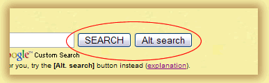

|
|
|
alt-usage-english.org |
| Home |
| Newsgroup |
| Intro Documents A B C D E F G |
| FAQ |
| FAQ Supplement |
| ASCII IPA |
| Audio Archive |
| Links |
| UCLE Corner |
| What's New? |
| Search |
| Site Map Where am I? |
| Contact |
|
|
|
IMPORTANT NOTICE: This site is scheduled for closure in September 2016.
If you have any comments about the closure, please post them to the newsgroup. See this page for information about the newsgroup and how to post to it. Why are there two search buttons? |
|
 On the English Usage Site Search page there are two search buttons, [SEARCH] and [Alt. search]. Which one should you use? The simple answer is: Type your query into the text box, then click on the [SEARCH] button and see if it works. If it doesn't work for you, use the [Alt. search] (alternate search) button instead. Then continue to use the same button for future searches. Quick explanation: The [SEARCH] button displays results more conveniently, but it doesn't work with all browsers. The [Alt. search] button is there for people who cannot use the [SEARCH] button because it doesn't work with their browser. Both buttons search the same pages and give the same results, but the results are displayed differently. Fuller explanation:
|
|